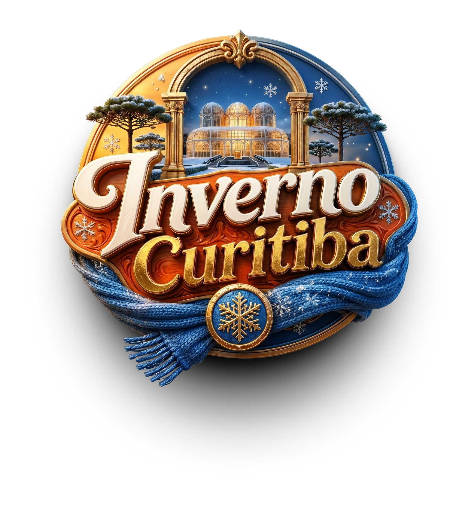

01 a 31 de julho · 2026
1º Festival
Sabores do Inverno Curitiba
Escolha seu menu, viva a experiência e dê sua nota aos melhores sabores da estação.
- 23
- restaurantes
- 2
- faixas de preço
- 2
- etapas no menu

Apoio especial
Centro Europeu fortalece a gastronomia curitibana.
O restaurante mais bem avaliado pelo público receberá um curso de capacitação em alta gastronomia e gestão, oferecido pelo Centro Europeu. Uma iniciativa que incentiva o desenvolvimento da gastronomia e do turismo local.
Apoio especial
Chegou pelo QR Code?
Peça, experimente e avalie.
- 01
Escolha um menu
Encontre um restaurante participante e confira se a experiência é servida no almoço, jantar ou em ambos.
- 02
Peça a experiência
Solicite o menu Sabores do Inverno: um prato principal e uma sobremesa por R$ 99 ou R$ 129.
- 03
Dê sua nota
Depois de experimentar, acesse o formulário oficial da Abrasel e avalie o menu. A maior média vence.
23 experiências para descobrir
Menus participantes
Nenhum menu encontrado
Tente outro nome ou veja todas as experiências.
Uma cidade inteira à mesa
Curitiba celebra o inverno pelo sabor.
Durante todo o mês de julho, restaurantes tradicionais e reconhecidos de Curitiba apresentam experiências exclusivas criadas especialmente para o inverno.
Cada menu à la carte reúne um prato principal e uma sobremesa em valores fixos de R$ 99 ou R$ 129, no almoço, jantar ou em ambos — conforme cada estabelecimento.
Sua nota faz parte
Avalie sua experiência.
Depois de experimentar, dê sua nota no formulário oficial da Abrasel. O restaurante com a maior média será o vencedor da temporada.
Avaliação em breve